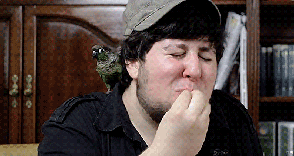

name: rkaneko-theme layout: true class: rkaneko-theme --- class: title-page # Retrospectives #### Jan 12, 2018 ##### at Axelspace Corporation <span class="head-my-name"> <span class="head-my-name__icon"> <img src="./img/myicon_round.png" alt="rkaneko"/> </span> <span class="head-my-name__text"> Ryota Kaneko </span> </span> <span class="head-github-name"> <span class="head-github-name__icon"> <i class="fa fa-github fa-2x"></i> </span> <span class="head-github-name__text"> rkaneko </span> </span> --- # Agenda 0. Why do we need retrospectives? 0. How do we do retrospectives? 0. Recap --- # Why do we need retrospectives? - The best thing is no problems occur, but we're sometimes faced with problems. - Processes need gradual improvement for adapting to environment's changes. - A new member joins to/leaves from our team. - We cannot have a perfect process from the beginning. - Team is like a car. - When there is something wrong with the car, we should inspect and repair it. - **We need sometimes .color-yellow[stop periodically].** --- # How do we do retrospectives? 0. Ice breaking 0. Collecting data 0. Bringing ideas together 0. Making a dicision what we do next 0. Closing --- class: paragraph-picture-page <figure> <div class="paragraph-picture-page__block"></div> <figcaption><p class="paragraph-picture-page__caption">Ice breaking</p></figcaption> </figure> --- ## Ice breaking - .color-yellow[**Enhance psychological safety!**] - Ensure the place where everyone can be relieved to speak anything. - Don't be offensive. - <i class="fa fa-thumbs-o-down" aria-hidden="true"></i> Alice vs. Bob - <i class="fa fa-thumbs-o-up" aria-hidden="true"></i> Problems vs. team - There is not any kind of hierarchical relationship. - We're the team! - <i class="fa fa-thumbs-o-down" aria-hidden="true"></i> That's .color-green[**your**] fault. - <i class="fa fa-thumbs-o-up" aria-hidden="true"></i> That's .color-yellow[**our**] fault. - Every member should understand what we do at our retrospective. - The facilitator should describe it at the beginning. --- class: paragraph-picture-page <figure> <img src="./img/collecting-data.jpg" alt="collecting data" width="130%" height="160%" /> <div class="paragraph-picture-page__block"></div> <figcaption><p class="paragraph-picture-page__caption">Collecting data</p></figcaption> </figure> --- ## Collecting data - Collect our product's metrics .color-yellow[regularly] (.color-yellow[quantitative] data) - burn up chart - story points (velocity) - test coverage - the number of bugs, interruption tasks, system faults etc - Collect our .color-yellow[qualitative] data using a methodology - KPT, Happiness radar, Timeline etc - Collected data helps for members to understand their team situation and to discuss effectively using them. --- ### KPT (Keep Problem Try) - .color-orange[Keep] means good points which improves us or helps us on this sprint. - <i class="fa fa-pencil-square-o" aria-hidden="true"></i> .color-grey[`Pair programming with Marco enhanced my coding because I don't have much space knowledgement.`] - .color-orange[Problem] means not good points which is troublesome for your/our work. - <i class="fa fa-thumbs-o-up" aria-hidden="true"></i> with [5 Whys](https://en.wikipedia.org/wiki/5_Whys) - <i class="fa fa-thumbs-o-down" aria-hidden="true"></i> Writing things which are difficult to improve or we cannot find a good solutions for. - <i class="fa fa-pencil-square-o" aria-hidden="true"></i> .color-grey[`There was difference between the function we implemented and what product owner expected because blahblah.`] - .color-orange[Try] means what we should do to improve a problem and to prevent a problem to occur again. - <i class="fa fa-pencil-square-o" aria-hidden="true"></i> .color-grey[`Let's start to study prototyping with product owner using Adobe XD.`] .center[.reference[FYI: http://code-artisan.io/retrospective-method-kpt/]] --- class: paragraph-picture-page <figure> <img src="./img/bringing-ideas-together.jpg" alt="bringing ideas together" width="130%" height="180%" /> <div class="paragraph-picture-page__block"></div> <figcaption><p class="paragraph-picture-page__caption">Bringing ideas together</p></figcaption> </figure> --- ## Bringing ideas together - Extract root causes using collected data & facts. - <i class="fa fa-thumbs-o-up" aria-hidden="true"></i> 5 Whys - Distinguish .color-yellow[facts] and .color-yellow[opinions] - Set up a hypothesis. - Design next actions. --- ### More detail problem - When .color-pink[**[Situation]**] I want to .color-pink[**[Motivation]**] so I can .color-pink[**[Expected Outcome]**]. - For better format - In 'when part', .color-pink[**adding context**] to situation concretely - -> Understanding its context enables you to design its solution effectively - .color-pink[**Adding forces**] to motivations - -> We can design its solution to reduce forces of motivations --- ### e.g. Amazon [Mayday](https://www.amazon.co.jp/gp/press/pr/201409181/) feature - When I’m using my tablet and encounter a problem … - [Motivation] I want to get help right away… - [Force] I’m irritated because I was in the middle of something… - [Solution] Reassure that customers don’t have to wait long to get help. ( I’m nervous I won’t finish what I was just doing ) - [Force] I get nervous asking for help… - [Solution] Remind customers how common it is to ask for help. (Asking for help might make me look stupid) .center[ .reference[ https://jtbd.info/5-tips-for-writing-a-job-story-7c9092911fc9 ] ] --- class: paragraph-page ## Making a decision what we do next</p></figcaption> --- ## Making a decision what we do next - We have limited time. - Cannot do everything to improve. - Prioritize what we should do next. - You can use [fist-to-five](http://agileforall.com/learning-with-fist-of-five-voting/). - Decide .color-yellow[**who**] does .color-yellow[**what**] .color-yellow[**by when**]. --- class: paragraph-picture-page <figure> <div class="paragraph-picture-page__block"></div> <figcaption><p class="paragraph-picture-page__caption">Closing</p></figcaption> </figure> --- ## Closing - Record the contents of the proceeding. - decision - taking pictures - Look back how to proceed this retrospective. - Cheers! (only kidding .color-red[<i class="fa fa-smile-o fa-2x" aria-hidden="true"></i>]) --- # Recap #### <i class="fa fa-lightbulb-o" aria-hidden="true"></i> It's important to stop periodically #### <i class="fa fa-lightbulb-o" aria-hidden="true"></i> Keep our psychological safety #### <i class="fa fa-lightbulb-o" aria-hidden="true"></i> Discuss based on facts but consider opinions & feelings #### <i class="fa fa-lightbulb-o" aria-hidden="true"></i> Keep improving --- class: paragraph-page ## Any questions? --- class: paragraph-picture-page <figure>  <div class="paragraph-picture-page__block"></div> <figcaption><p class="paragraph-picture-page__caption">Beautiful!</p></figcaption> </figure> --- class: paragraph-page ### Thanks! --- # References - http://www.ryuzee.com/contents/blog/7107 - http://retrospectivewiki.org/index.php?title=Retrospective_Plans